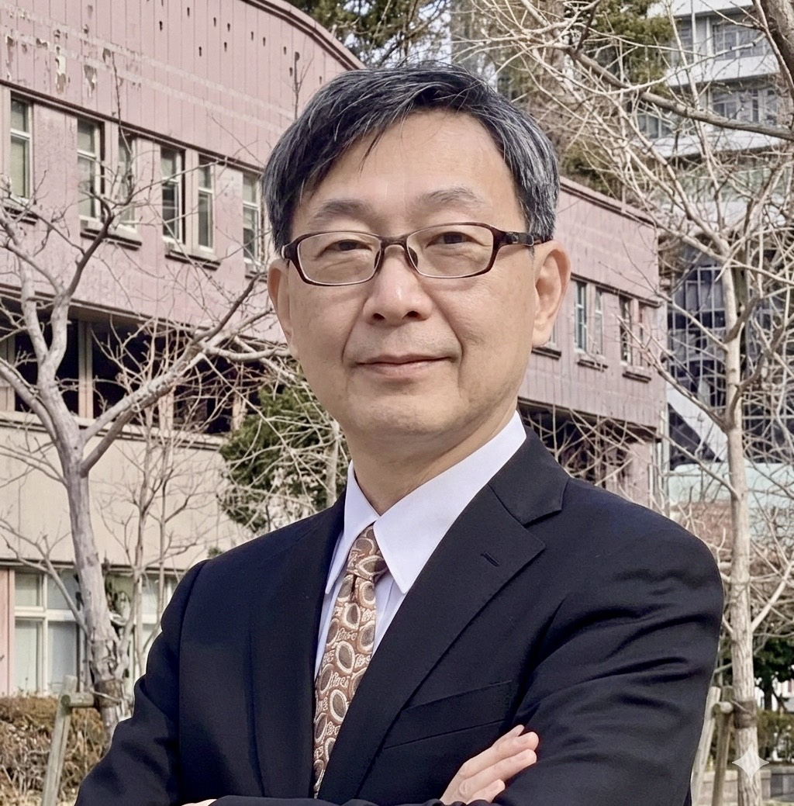

Perekrutan Pekerja Asing & Permohonan Visa | Izin Tinggal Permanen & Visa Keluarga
Gyoseishoshi yang Mendukung Pekerja Berketerampilan Khusus Filipina di Seluruh Jepang
Dukungan gyoseishoshi untuk prosedur imigrasi seperti visa Pekerja Berketerampilan Khusus, visa kerja, dan perubahan status tinggal di seluruh Jepang.
Untuk Perusahaan
Dukungan perekrutan pekerja asing dan permohonan visa Pekerja Berketerampilan Khusus
Prosedur status tinggal bagi peserta magang teknis
Layanan konsultasi untuk perusahaan dan organisasi pengawas
Untuk Filipina / Indonesia
Visa Pekerja Berketerampilan Khusus dan visa Engineer / Specialist / International Services
Permohonan visa lainnya
Permohonan registrasi keluarga dan naturalisasi
Untuk Warga Asing
Permohonan perpanjangan visa
Konsultasi pendirian perusahaan
Konsultasi prosedur administrasi di Jepang
Dukungan perekrutan pekerja asing (permohonan Organisasi Dukungan Terdaftar sedang diproses, rencana pendaftaran Maret 2026)
Second Penguin Planning akan menangani dukungan tersebut.
Kami biasanya merespons dalam 24 jam.
Berita
Dukungan Permohonan Visa untuk Warga Asing (Pekerja Berketerampilan Khusus / Visa Kerja / Status Tinggal)
Untuk Perusahaan
Kami membantu perekrutan Pekerja Berketerampilan Khusus
Dari konsultasi perekrutan hingga permohonan visa dan dukungan kehidupan setelah bekerja,
kami menyediakan dukungan satu pintu untuk perekrutan pekerja asing.
- Penjelasan sistem perekrutan tenaga kerja asing
- Dukungan permohonan status tinggal
- Dukungan kehidupan melalui Organisasi Dukungan Terdaftar
- Pembangunan sistem perekrutan tenaga kerja asing
Untuk Warga Filipina & Indonesia
Kami membantu permohonan visa untuk bekerja di Jepang
Gyoseishoshi bersertifikat membantu prosedur bekerja dan tinggal di Jepang, termasuk visa SSW, visa kerja, dan visa keluarga.
- Permohonan Visa Pekerja Berketerampilan Khusus (SSW)
- Visa Engineer / Specialist in Humanities / International Services
- Visa Keluarga
- Konsultasi kehidupan di Jepang
Untuk Warga Negara Asing
Kami mendukung prosedur Status Tinggal di Jepang
Kami membantu warga negara asing dalam berbagai prosedur administrasi di Jepang.
- Perpanjangan Masa Tinggal
- Perubahan Status Tinggal
- Dukungan Pendirian Perusahaan
- Naturalisasi & Izin Tinggal Permanen
Testimoni
"Kami dapat mempercayakan prosedur Pekerja Berketerampilan Khusus dari Filipina dengan tenang. Ketelitian mereka sangat membantu perusahaan kami."
(Perusahaan Manufaktur)"Saya khawatir tentang prosedur perubahan status tinggal, tetapi berkat respons cepat mereka, saya berhasil mendapatkan izin."
(Permohonan Individu)Bukan hanya permohonan. Sistem yang memungkinkan Anda mempercayakan semuanya dari perekrutan hingga dukungan setelah bekerja.
Selain layanan gyoseishoshi, kantor kami juga terdaftar sebagai Organisasi Dukungan Terdaftar (Nama: Second Penguin Planning).
Oleh karena itu kami menyediakan dukungan menyeluruh mulai dari permohonan visa hingga dukungan kontrak kerja, pembuatan rencana dukungan, dukungan kehidupan, dan pembangunan sistem perusahaan.
Kami menyediakan sistem satu pintu dengan tanggung jawab yang jelas, sehingga tidak perlu memisahkan antara "gyoseishoshi untuk permohonan" dan "perusahaan lain untuk dukungan".
Kami adalah pilihan bagi perusahaan yang ingin membangun sistem perekrutan tenaga kerja asing secara terstruktur.
Informasi Kantor
- Nama Kantor
Kantor Gyoseishoshi Yoshio Tokunaga - No. Registrasi
Federasi Nasional Gyoseishoshi Jepang No. 24303656 - Telepon
070-9192-2524 - Email
info@tokunaga-gyosei.jp - Alamat
4N-07-01 Kobe Fashion Mart, 6-9 Koyocho Naka, Higashinada-ku, Kobe, Hyogo 658-0032 Jepang - Jam Operasional
Hari Kerja: 8:30 – 17:00
Sabtu: 9:00 – 15:00 (Hanya Reservasi)
*Tutup Minggu dan Hari Libur Nasional
*Peta dapat diperbesar dan digunakan untuk mencari rute.
Pesan dari Perwakilan
Yoshio Tokunaga
Gyoseishoshi Bersertifikat / Perwakilan
Setelah bekerja sebagai pegawai pemerintah nasional selama 31 tahun, saya membuka kantor ini di Kobe. Misi saya adalah “menjadikan masalah hukum yang kompleks menjadi sederhana”, dan saya berkomitmen untuk mendampingi klien.
- Gyoseishoshi / Agen Penghubung Imigrasi
- Bahasa Inggris (Tingkat Bisnis)
- Guru Bahasa Jepang
- Administrasi Sungai & Izin
- Kedutaan Besar Jepang di Indonesia
- Ahli Pencegahan Bencana (Filipina)

Silakan hubungi kami dengan bebas
Konsultasi pertama gratis | Dukungan online seluruh Jepang
Telepon SekarangQ&A Pertanyaan yang Sering Diajukan
Warga Asing yang Tinggal di Jepang
Pertanyaan mengenai perubahan status tinggal, perpanjangan visa, dan izin tinggal permanen akan dipublikasikan di sini.